Habilidades Especiales
Habilidades
5X - Magic Star Knife (Any)
Vista Previa - 5X
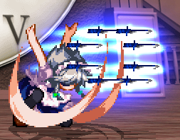| Damage Base | Frame Adv. | Descripción |
|---|---|---|
| 34 | +3 | Proyectiles rápidos que hacen buen daño pero solo avanzan. Aplican una gran cantidad de carga cuando se usan mientras el tiempo está detenido, por lo que es posible que no desee usarlos en ese momento. |
26X - Intervention (Any)
Vista Previa - 26X
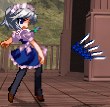| Damage Base | Frame Adv. | Descripción |
|---|---|---|
| 75 | +24 | Lanza cuchillos rápidamente que cubren un área más grande. El daño no es tan bueno pero es muy efectivo para perturbar la estrategia del oponente. |
24X - Aimed Ricochet (Standing)
Vista Previa - 24X
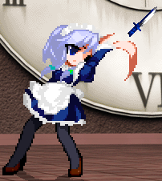| Damage Base | Frame Adv. | Descripción |
|---|---|---|
| 50/85 | +12/+25 | Lanza un cuchillo que rebota dos veces, luego gira hacia el oponente y acelera. Si golpea antes, el daño es menor. |
22X - Clock Corpse (Standing)
Vista Previa - 22X
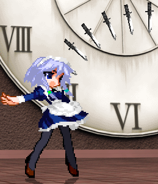| Damage Base | Frame Adv. | Descripción |
|---|---|---|
| 98 | +19 | Coloque cuchillos alrededor del oponente congelado en el tiempo para obligarlo a moverse o bloquear. |
2X - Legcutter (Standing)
Vista Previa - 2X
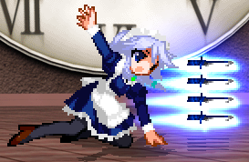| Damage Base | Frame Adv. | Descripción |
|---|---|---|
| 48 | +11 | Un ataque de proyectil bajo que es indefendible mientras está de pie. Es más débil que Magic Star Knife y hay menos cuchillos. |
5Y - Bounce No-Bounce (Standing)
Vista Previa - 5Y
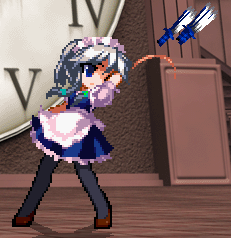| Damage Base | Frame Adv. | Descripción |
|---|---|---|
| 75 | +17 | Cantidad sobre calidad, una gran cantidad de cuchillos débiles. Debido a las limitaciones del motor, no puedes tener más de 24 de estos cuchillos activos a la vez. |
2Y - Ceiling Bonuce (Standing)
Vista Previa - 2Y
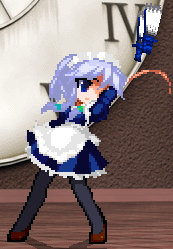| Damage Base | Frame Adv. | Descripción |
|---|---|---|
| 100 | +17 | Igual que arriba, pero los cuchillos se dirigen mucho más hacia arriba. Debido a las limitaciones del motor, no puedes tener más de 24 de estos cuchillos activos a la vez. |
24Y - Sense of Thrown Edge (Standing)
Vista Previa - 24Y
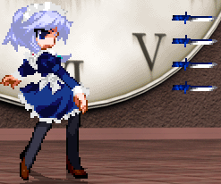| Damage Base | Frame Adv. | Descripción |
|---|---|---|
| 80 | +19 | Lanza cuchillos hacia adelante, pero congélalos a tiempo durante 3 segundos. |
42Y - Prepared for Everything (Standing)
Vista Previa - 42Y
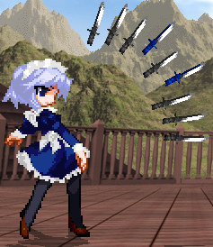| Damage Base | Frame Adv. | Descripción |
|---|---|---|
| 90 | +19 | Lanza cuchillos en todas las direcciones y congélalos a tiempo. |
22Y/26Y - Crossup Magic (Standing)
Vista Previa - 22Y/26Y
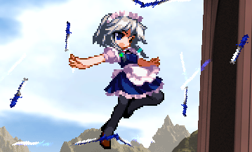| Damage Base | Frame Adv. | Descripción |
|---|---|---|
| 75 | +33/+35 | Graze hacia adelante o hacia arriba mientras te proteges con círculos de cuchillos. Los cuchillos también pueden cortar al oponente. |
5C - Perfect Maid (Standing)
Vista Previa - 5C
| Damage Base | Frame Adv. | Descripción |
|---|---|---|
| 96 | -4 | Un movimiento de inversión que se activa cuando es golpeado por ataques fisicos. |
26C+Dirección - Vanishing Everything (Standing)
Vista Previa - 26C+Dirección
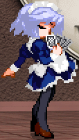| Damage Base | Frame Adv. | Descripción |
|---|---|---|
| - | - | Te teletransporta. |
2C - Time Paradox I (Standing)
Vista Previa - 2C
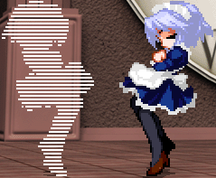| Damage Base | Frame Adv. | Descripción |
|---|---|---|
| - | - | Sakuya de una línea de tiempo diferente aparece y usa un movimiento danmaku aleatorio. No cuesta nada de tu barra de danmaku aparte del 40% para Time Paradox. Time Paradox se puede cancelar para atacar y hacerlo NO interrumpirá el ataque de la otra Sakuya. |
2Z - Time Paradox II (Standing)
Vista Previa - 2Z

| Damage Base | Frame Adv. | Descripción |
|---|---|---|
| - | - | Sakuya de una línea de tiempo diferente aparece y usa la Spell Card seleccionada. Fallará si la carta seleccionada es una carta de escenario. El costo de energía de la card se restará de su stock de energía. Time Paradox se puede cancelar para atacar y hacerlo NO interrumpirá el ataque de la otra Sakuya. |
24Z - Time Paradox III (Standing)
Vista Previa - 24Z
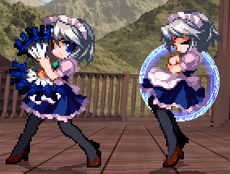| Damage Base | Frame Adv. | Descripción |
|---|---|---|
| - | - | Sakuya de una línea de tiempo diferente aparece y usa la Spell Card declarada. Fallará si no hay ninguna card declarada. El costo de energía de la card se restará de su stock de energía. Time Paradox se puede cancelar para atacar y hacerlo NO interrumpirá el ataque de la otra Sakuya. |
62C - Cronómetro Especial de Sakuya (Standing)
Vista Previa - 62C
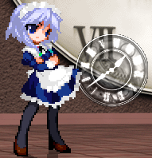| Damage Base | Frame Adv. | Descripción |
|---|---|---|
| - | - | Dispara un proyectil que no hace daño pero al contacto con un oponente, detiene su movimiento junto con todos sus aliados y proyectiles. |
42C - Bounce, Bonuce! (Standing)
Vista Previa - 42C
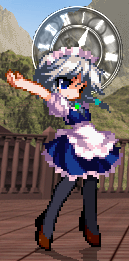| Damage Base | Frame Adv. | Descripción |
|---|---|---|
| - | - | Igual que el anterior, pero el proyectil rebota en el suelo y avanza más lento. |